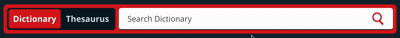

Beta
Merriam-Webster Search Area Microinteractions
Link to interface: https://www.merriam-webster.com/
On the Search Area at the top of the screen when the user opens the website, there are three objects:
- Object 1 - Toggle between "Dictionary" and "Thesaurus"
- Object 2 - Search bar
- Object 3 - Search icon button
Triggers
Object 1 - Toggle
- Hover On
- Hover Off
- Click "Dictionary"
- Click "Thesaurus"
Object 3 - Search Icon Button
Rules
Object 1 - Toggle
Hover On
- Cursor changes to a finger.
- Background fades from navy blue to dark grey-blue.
Hover Off
- Cursor reverts to default.
- Background fades from dark grey-blue to navy blue.
Click "Dictionary" Button
- Background slides left and fades from red to orange (250ms, ease-in-out).
- Border and search icon color fade from red to orange (250ms, synchronized).
Click "Thesaurus" Button
- Background slides right and fades from orange to red (250ms, ease-in-out).
- Border and search icon color fade from orange to red (250ms, synchronized).
Object 2 - Search Bar
Hover On
- Cursor changes to I-beam.
- Shadow fades to light grey.
Hover Off
- Cursor reverts to default.
- Shadow fades to dark grey.
Click
- No visual feedback (standard text input behavior).
Object 3 - Search Icon Button
Hover On
- Cursor changes to a finger.
Hover Off
- Cursor reverts to default.
Click
- No visual feedback (executes search).
Feedback
Object 1 - Toggle
- Color changes and sliding motion provide clear visual feedback.
Object 2 - Search Bar
- Shadow and cursor feedback guide user interaction.
Object 3 - Search Icon Button
- Cursor feedback indicates interactivity.
Loops & Modes
Object 1 - Toggle
Dictionary Mode (Orange)
- Orange background, border, and search icon.
- Returns dictionary definitions.
- Persists until Thesaurus clicked.
Thesaurus Mode (Red)
- Red background, border, and search icon.
- Returns synonyms and antonyms.
- Persists until Dictionary clicked.
Toggle Behavior
- Unlimited toggles between modes.
- Animation completes before new input accepted.
